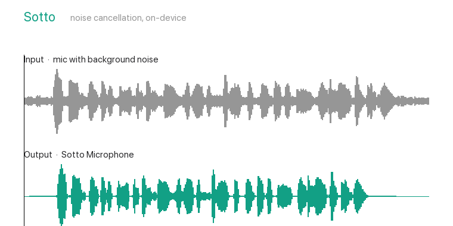

Sotto removes background noise from your microphone in any call app — keyboard, fan, traffic, chatter. On-device with DeepFilterNet3. No cloud, no account, no virtual cables.

Input (noisy) on top, Sotto's output below — background noise suppressed, voice kept.
Great open-source mic cleanup exists — on Linux. On macOS the options are paid and closed, or tools that make you hand-wire a virtual cable. Sotto just works.
Ships its own Core Audio driver. You never install BlackHole or route audio by hand.
DeepFilterNet3 — noticeably better than the older RNNoise most open tools use.
No account, no sign-in, no telemetry. Nothing leaves your Mac. Ever.
MIT-licensed. Use it, read it, fork it. No subscription, no paywall on noise removal.
Pick “Sotto Microphone” in your call app. Sotto captures your real mic, cleans each 10 ms chunk on-device, and hands the clean audio to the app.
Measured on a synthetic test set (6 noise types × 4 levels). Higher is better. Sotto's noise model matches Krisp; the live path is catching up.
| Noise removed | Overall | Speech (PESQ) | |
|---|---|---|---|
| Unprocessed | 2.67 | 2.44 | 1.61 |
| Sotto (live) | 3.58 | 2.71 | 2.12 |
| Sotto (model) | 3.93 | 3.09 | 2.79 |
| Krisp (standard) | 4.00 | 3.08 | 3.11 |
DNSMOS scores. Runs at ~4% of one CPU core. Full method →
Developer preview — build from source on macOS 14+ (Apple Silicon). A one-click signed installer is on the way.
git clone https://github.com/naga-pavan12/sotto.git cd sotto make # build the denoiser, driver, and app make install # install the audio driver (asks for your password) make app # build Sotto.app open app/build/Sotto.app
Then choose “Sotto Microphone” in Zoom, Meet, Teams, Discord, or OBS.